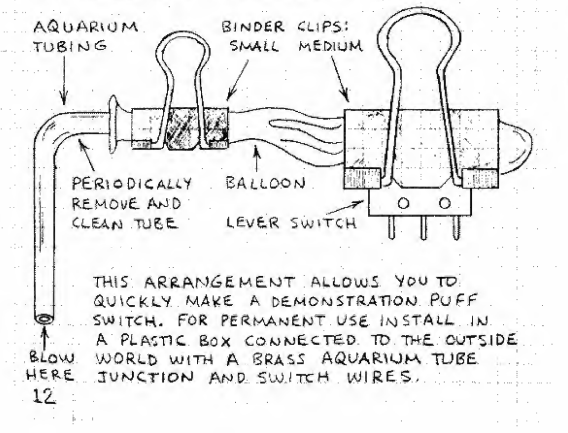

Robotic Arts Intro Fall 2019 (IA277.01)
- Instructor: Lucas Haroldsen (lharoldsen@mica.edu)
- Class Site: yasunaga.work/raif18
- syllabus: syllabus.pdf
- Resources: links.html
- Office hours: Tuesday 1 - 4pm
09/13: Switch and Transistors --- [meaning from 1s and 0s]
Welcome back!

Handmade Switch sketches!
First things first, let's look at your switch ideas!
- Look at your ideas
- Partner up with someone and chain the switches
- Add a condition(instruction) for the switches
- chain more switches!
- Make new folder in your Google drive folder and name it "handmade switches"
- add your documentations
Transistors --> Make your circuit permanent!
Today, we will go over together:
- boolean logic
- transistor as a switch
- using photoresistor as a switch
- touch switch
- capacitor
- delay circuit
- translating your breadboard circuit to perforated board
- making things semi permanent
Reading: Medium by Malcom McCullough
"To begin, the fundamental difference between digital and traditional media is rooted in microstructure: bits versus atoms. Processes that move physical atoms around are precisely the irreversible aspect of traditional work. According to very fundamental laws of physics, operations such as cutting, bonding, and mixing are irreversible. Mix black paint into white, and you've got grey for the duration. Crack a fine piece of laboriously refined jade work, and you have lost not only time but also expensive material—a rare configuration of atoms.
By contrast, the microstructure of the computer medium is bits: a specified arrangement of symbols. The computer is made out of atoms, to be sure, but its logic employs symbols that quantize the physical charges they represent—it obtains stable bits. Because any physical deviations caused by atoms get rounded and corrected, these symbols built on bits do not degrade. In the microstructure of the digital medium, arrangements and values can always be reconstructed; their previous states can be stored and recalled; additional instances and versions can be replicated."
From Abstracting Craft: The Practiced Digital Hand by Malcolm McCullough
- What did you think?
Here is the text The Theory of Affordances by James J. Gibson
How Computers Work: Information (binary)

Doug Engelbart's presentation at the Fall Joint Computer Conference in San Francisco, December 9, 1968 titled "A Research Center for Augmenting Human Intellect."
Céleste Boursier
HOMEWORK
Finish soldering your circuit of your choice
- Please finish soldering one of these circuit onto the perforated board.
- Transistor touch switch
- Day circuit (on when there is light)
- Night circuit (on when there is NO light
- Transistor delay circuit
- Take a picture / video and upload it to the google drive